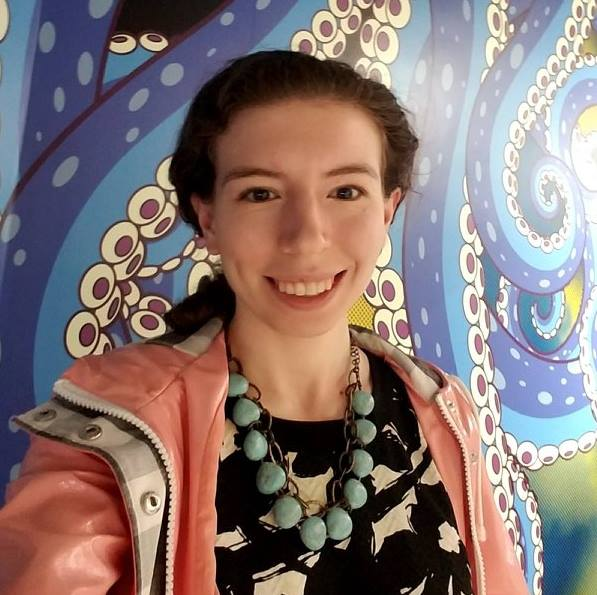

I am a PhD student in Geography at the University of British Columbia. After graduating with a biology degree,
I worked in data science for two and a half years forecasting health outcomes at the Institute for Health Metrics and
Evaluation. Now, I study interactions between science, governance, and care in the context of
responses to emerging infectious diseases - especially how data collection and predictive modelling deployed as part
of these responses shape multispecies relations and possibilities for equitable care.
For my MA work, I blended my undergraduate training in biology and love for the critical humanities by using the Giant Pacific octopus (Enteroctopus dofleini) exhibit at the Vancouver Aquarium to investigate the role of captive care in conservation. Engaging with feminist scholarship and conservation science studies, this work outlines how captive care as a conservation strategy operates in tension with ecological violence it simultaneously opposes and relies upon.
Other profiles:
UBC Graduate and Postdoctoral Studies
UBC Department of Geography
